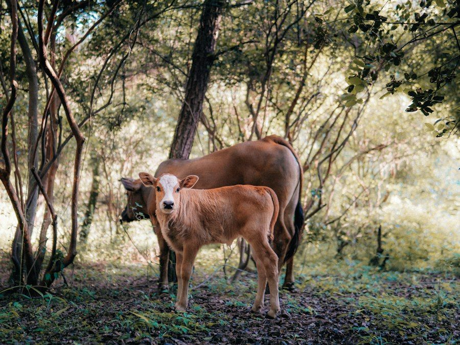
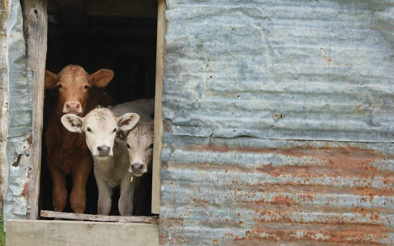
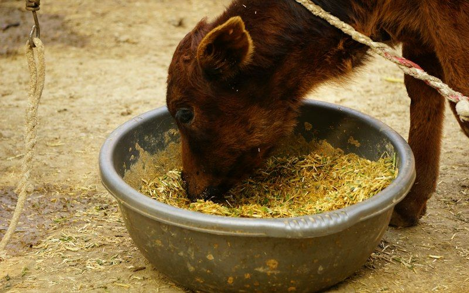
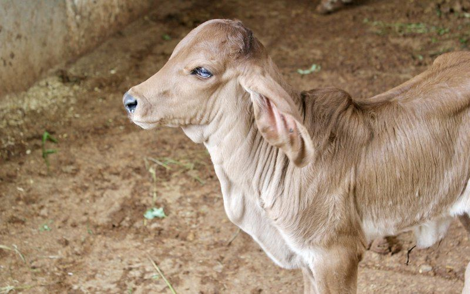
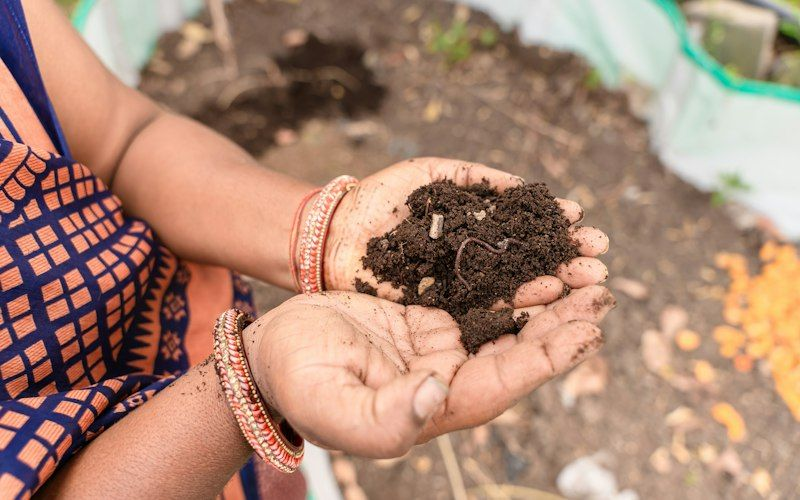

Caring for Gaumata, building Gaushalas that sustain themselves
A community initiative for the protection and welfare of cows, the conservation of indigenous breeds, and Gaushalas that stand on their own through organic farming and Panchgavya products.

Why Gau Seva matters
Cultural: for generations, the cow has been revered across India as Gaumata, a symbol of nurture, gratitude and the bond between people and the land. Caring for her is an act of seva rooted in our traditions.
Ecological: indigenous cattle such as Gir, Sahiwal, Tharparkar, Red Sindhi, Kankrej and Ongole are adapted to Indian heat, local fodder and disease conditions. Their dung and urine enrich soil, support natural farming and reduce dependence on chemical inputs.
Humanitarian: many cows, especially those no longer giving milk, are abandoned and left to wander roads, where they face injury, illness and starvation, and where they can cause accidents. Shelter and care protect both the animals and the community.
Every cow safe, every Gaushala self-reliant
- Clean, weather-resilient shelters where rescued and elderly cattle live with dignity.
- Reliable year-round nutrition through fodder banks and local farmer partnerships.
- Prompt veterinary care, rescue and preventive vaccination.
- Conservation of indigenous breeds through good care and responsible breeding.
- Gaushalas that fund their own running costs through organic manure, vermicompost and eco-friendly products.
How the initiative works

Gaushala infrastructure
Building clean, weather-resilient shelters that protect cattle from heat, rain and cold.
- Sheds with proper ventilation, natural light and raised, non-slip, easy-to-clean flooring with drainage
- Shade structures for the summer and wind protection for the winter
- Clean water troughs and storage, with rainwater harvesting where possible
- Open grazing and walking spaces for exercise and natural behaviour
- Separate areas for calves, elderly, sick and injured cattle

Nutrition and fodder bank
Providing a balanced, dependable diet every single day of the year.
- Daily green fodder, sourced from local farmers and Gaushala plots
- Dry fodder and hay stored for lean months and droughts
- Clean drinking water available at all times
- Mineral mixtures, salt licks and nutritious cattle feed as advised by veterinarians
- A fodder bank reserve so that no shortage leaves animals hungry

24/7 veterinary and rescue care
Responding quickly to injury and illness, and preventing disease before it spreads.
- Emergency treatment for injured and sick cattle with qualified veterinarians
- Ambulance support to rescue injured or stray cattle from roads
- Preventive vaccination drives against diseases such as foot-and-mouth disease and lumpy skin disease, in coordination with the State animal husbandry department
- Regular deworming, hoof care and health records for every animal
- Compassionate care for elderly and disabled cattle for the rest of their lives

Self-sustaining ecosystem: Panchgavya and organic farming
Helping Gaushalas become financially self-reliant so that care does not depend only on donations.
- Organic manure and vermicompost from cow dung for local farmers and gardeners
- Bio-fertilisers and natural farming inputs prepared under guidance
- Eco-friendly products such as dung-based diyas, pots and fuel cakes
- Biogas units for cooking and lighting within the Gaushala
- Training for Gaushala staff and nearby farmers in natural farming practices
Ways you can help
Contribute fodder
Support daily green fodder, dry hay and cattle feed for rescued and elderly cows.
Sponsor a shelter
Help build or repair a shed, water trough or flooring at a partner Gaushala.
Volunteer locally
Give time for feeding, cleaning, rescue coordination, awareness or helping with organic product making.
Pledge ongoing support
Commit a small monthly amount so that Gaushalas can plan fodder and veterinary care with confidence.
Transparent utilisation disclosures
Where money goes
Every contribution will be allocated to one of the four pillars: infrastructure, nutrition, veterinary care or self-sufficiency, and reported that way.
Periodic reports
Once contributions open, we will publish periodic utilisation summaries: amounts received, amounts spent by pillar, and the Gaushalas supported, with photographs where appropriate.
Partner standards
Partner Gaushalas will be expected to keep animal health records, follow veterinary advice, and comply with applicable animal welfare and local laws.
This is a non-commercial, not-for-profit community initiative. Please read the Mission and Disclaimer and the Privacy Notice (DPDP Act).